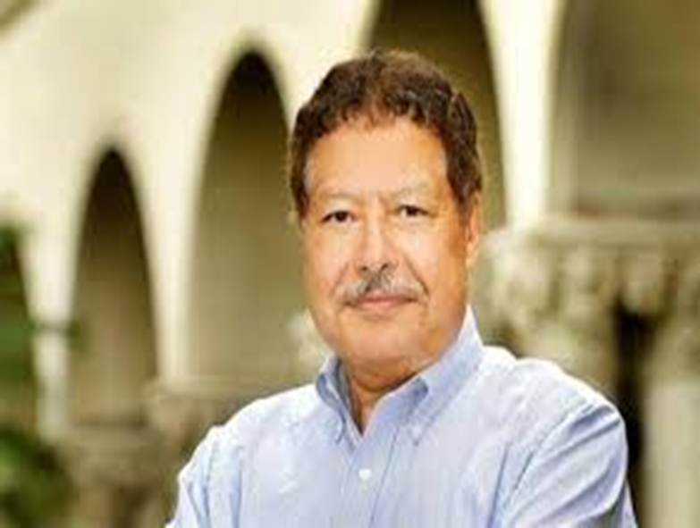

قضوة: احمد زويل
أحمد حسن زويل (26 فبراير 1946 – 2 أغسطس 2016) هو عالم كيميائي مصري حاصل على جائزة نوبل في الكيمياء لسنة 1999 لأبحاثه في مجال كيمياء الفيمتو، إذ اخترع ميكروسكوب يُصوِّر أشعة الليزر في زمن مقداره فمتوثانية، وهكذا يمكن رؤية الجزيئات أثناء التفاعلات الكيميائية، ويُعدُّ هو رائد علم كيمياء الفيمتو، ولقب بـ«أبى كيمياء الفيمتو»، وهو أستاذ الكيمياء وأستاذ الفيزياء في معهد كاليفورنيا للتقنية. توفي في عام 2016.